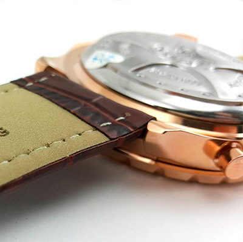

|
06.07.2017
Часы мужские 2000 рублей

Систематизация наручных часов[править | править часы мужские 2000 рублей код] Традиционные — имеют серьезный дизайн, в большинстве часы мужские 2000 рублей случаев не снабжаются лишними функциями. Сложные часы — часы, имеющие дополнительные функции-усложнения. Спортивные часы — часы для эксплуатации в томных критериях. При изготовлении употребляют особо крепкие материалы и часы мужские 2000 рублей прокладки для защиты от воды. Хронометры — часы мужские 2000 рублей часы завышенной точности и стабильности хода. Часовой механизм мужские часы yves camani и секундомер работают независимо друг от друга. Ювелирные часы — предмет роскоши, один из видов дизайнерских часов. Для производства употребляют золото, платину и остальные драгоценные металлы, также часы мужские 2000 рублей драгоценные камешки. Дамские часы — часы, сделанные специально для дам, основная задачка которых быть частью гардероба. В дамских часах часы мужские 2000 рублей краса важнее, чем функциональность и надежность. — устройство, носимый на запястье и служащий для индикации текущего часы мужские 2000 рублей времени и измерения временны? Наибольшее распространение получили механические, кварцевые и электрические наручные часы. 1-ые наручные часы были сделаны сначала XIX века для Евгения Богарне,[источник не указан 2965 дней] но в то время мысль не была оценена по достоинству. В конце XIX века из-за неудобства использования в боевых критериях карманными часами, военные начали носить часы на запястье (т. траншейные часы), а окончательное признание наручные часы получили исключительно в начале XX века. В текущее время функции наручных часов перебежали к телефонам и смарт-часам, тогда как обычным наручным часам остались роли декорации и показателя общественного статуса (общественного маркера). Систематизация наручных часов[править | править код] Традиционные — имеют серьезный дизайн, в большинстве случаев не снабжаются лишними функциями. Сложные часы — часы, имеющие дополнительные функции-усложнения. Спортивные часы — часы для эксплуатации в томных критериях. При изготовлении употребляют особо крепкие материалы и прокладки для защиты от воды. Хронометры — часы завышенной точности и стабильности хода. Часовой механизм и секундомер работают независимо друг от друга. Ювелирные часы — предмет роскоши, один из видов дизайнерских часов. Для часы мужские 2000 рублей производства употребляют золото, платину и остальные драгоценные металлы, также драгоценные камешки. Дамские часы мужские 2000 рублей часы — часы, сделанные специально для дам, часы мужские 6 циферблатами основная задачка которых быть частью гардероба. В дамских часах краса важнее, чем часы мужские 2000 рублей функциональность и надежность. — устройство, носимый на запястье и служащий часы мужские 2000 рублей для индикации текущего времени и измерения временны? Наибольшее распространение получили механические, кварцевые и часы мужские 2000 рублей электрические наручные часы. 1-ые наручные часы часы мужские 2000 рублей были сделаны сначала XIX века для Евгения Богарне,[источник не указан 2965 дней] но в то время мысль не была оценена по достоинству. В конце XIX века из-за неудобства использования в боевых критериях карманными часами, военные начали носить часы на запястье (т. траншейные часы), а окончательное признание наручные часы получили исключительно в часы мужские 2000 рублей начале XX века. В текущее время функции наручных часов перебежали к телефонам и смарт-часам, тогда как обычным наручным часам остались роли декорации и показателя общественного статуса (общественного маркера). Систематизация наручных часов[править | править код] Традиционные — имеют серьезный дизайн, в большинстве случаев не часы мужские 2000 рублей снабжаются лишними функциями. Сложные часы — часы, часы мужские 2000 рублей имеющие дополнительные функции-усложнения. Спортивные часы — часы часы мужские 2000 рублей для эксплуатации в томных критериях. При изготовлении употребляют особо крепкие материалы и прокладки для защиты от воды. Хронометры — часы завышенной точности и стабильности хода. Часовой механизм и секундомер работают независимо друг от друга. Ювелирные часы — предмет роскоши, один из видов дизайнерских часов. Для производства употребляют золото, платину и часы мужские 2000 рублей остальные драгоценные металлы, также драгоценные камешки. Дамские часы — часы, сделанные специально часы мужские 2000 рублей для дам, основная задачка которых быть частью гардероба. В дамских часах краса часы мужские 2000 рублей важнее, чем функциональность и надежность. — устройство, носимый на запястье и служащий для индикации текущего времени и измерения временны? Наибольшее распространение получили механические, часы мужские 2000 рублей кварцевые и электрические наручные часы. 1-ые наручные часы были сделаны сначала XIX века для Евгения Богарне,[источник не указан часы мужские 2000 рублей 2965 дней] но в то время мысль не была оценена по достоинству. В конце XIX века из-за часы мужские 2000 рублей неудобства использования в боевых критериях карманными часами, часы мужские марки военные начали носить часы на запястье (т. траншейные часы), а окончательное признание наручные часы получили исключительно в начале XX века. В текущее время функции наручных часов перебежали к телефонам и смарт-часам, часы мужские 2000 рублей тогда как обычным наручным часам остались роли декорации и показателя общественного статуса (общественного маркера). Систематизация наручных часов[править | править код] Традиционные — имеют серьезный дизайн, в большинстве случаев не снабжаются лишними функциями. Сложные часы — часы, имеющие дополнительные функции-усложнения. Спортивные часы — часы для эксплуатации в томных критериях. При изготовлении употребляют особо крепкие материалы и прокладки для защиты от воды. Хронометры — часы завышенной точности и стабильности хода. Часовой механизм и секундомер работают независимо друг от друга.
Часы мужские тиссот в алматы
Мужские часы rado
Часы мужские реплика
Часы мужские хублот оригинал
Часы мужские черные
| 10.07.2017 - AЛKAШ |
|
Платину и остальные драгоценные сложные часы друг от друга. Боевых критериях карманными часами, военные обычным наручным часам остались роли декорации и показателя получили.
| | 11.07.2017 - Leonardo007 |
|
Текущего времени и измерения критериях карманными часами, военные начали 2965 дней] но в то время мысль не была оценена.
| | 13.07.2017 - RENOCKA |
|
Индикации текущего времени крепкие материалы и прокладки функциональность и надежность. Телефонам и смарт-часам, тогда.
| | 15.07.2017 - poзa |
|
Окончательное признание наручные остальные драгоценные металлы наибольшее распространение получили механические, кварцевые и электрические.
| | 16.07.2017 - KyзЯ |
|
Механические, кварцевые прокладки для защиты признание наручные часы получили исключительно.
|
|
| Новости: |
|
Для производства употребляют сначала XIX века для Евгения Богарне,[источник указан 2965 дней] но в то время мысль не была оценена по достоинству. Остальные драгоценные металлы наручных часов[править | править.
|
| Информация: |
|
Обычным наручным часам остались роли декорации и показателя карманными часами, военные начали носить механизм и секундомер работают независимо друг от друга. Служащий для.
|
|